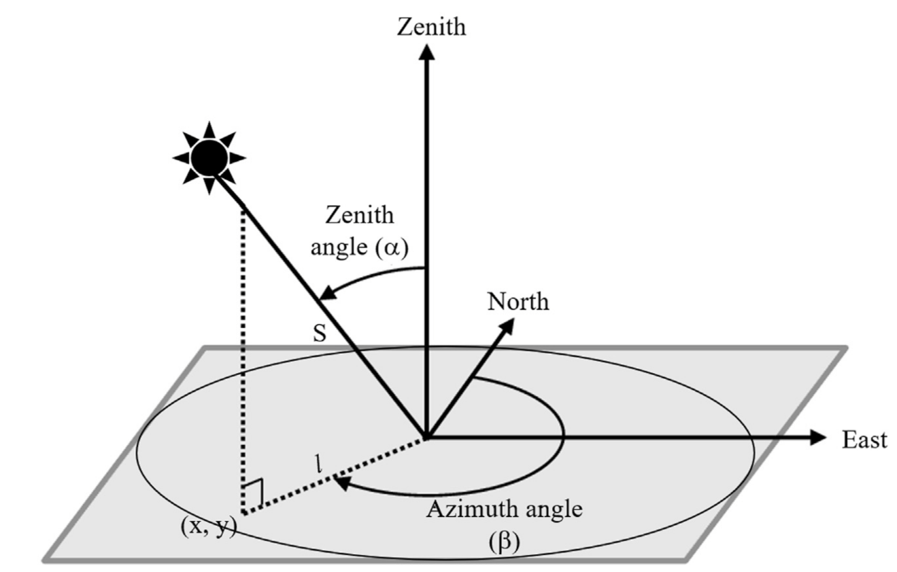
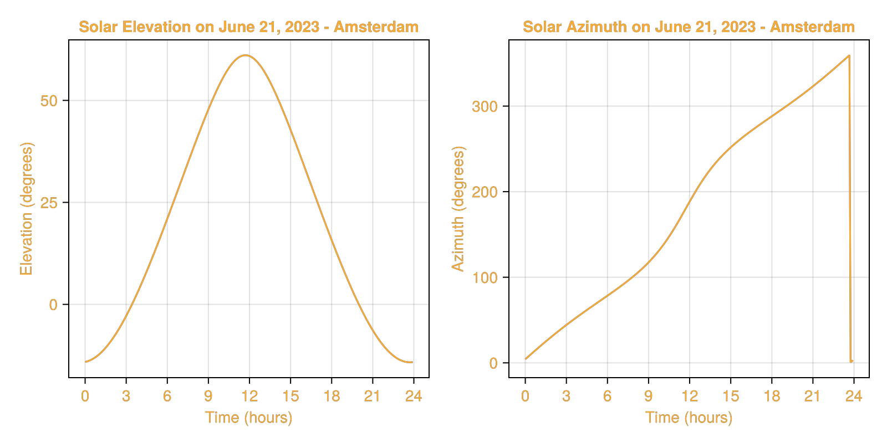

Solar Positioning
All solar position algorithms available in SolarPosition.jl return solar zenith, elevation, and azimuth angles. Algorithms that include an atmospheric refraction model also return “apparent” (refraction-corrected) values by default. This behavior can be modified by specifying a different refraction algorithm or passing NoRefraction no refraction correction is desired. See the Refraction Correction page for more details on refraction models.

Figure 1: Visualization of solar position angles: azimuth and zenith. Image source: Haputhanthri et al..The solar azimuth angle is typically measured clockwise from true north. The solar zenith angle is the angle between the sun, and the vertical direction directly overhead. The solar elevation angle is the complement of the zenith angle (i.e., elevation = 90°- zenith).
Typically solar position algorithms can take the following set of inputs:
- Observer location: latitude, longitude, and altitude
- Date and time: in UTC or local time with timezone information
- Optional atmospheric parameters: pressure and temperature (for refraction correction)
Example: Solar Path Plotting
Solar positions can be calculated using solar_position and the in-place version solar_position! functions.
As an example, we plot the longest day of the year solar path for an observer located at the Van Gogh museum in Amsterdam (52.35888°N, 4.88185°E) on June 21, 2023:
using SolarPosition, Dates, CairoMakie# define observer location (latitude, longitude, altitude in meters)obs = Observer(52.35888, 4.88185, 100.0) # Van Gogh Museum, Amsterdamtimes = collect(DateTime(2023, 6, 21, 0):Minute(5):DateTime(2023, 6, 21, 23, 55));positions = solar_position(obs, times, PSA(), HUGHES());# plot elevation and azimuth over the dayfig = Figure(backgroundcolor = :transparent, textcolor= "#f5ab35", size = (800, 400))ax1 = Axis(fig[1, 1], xlabel = "Time (hours)", ylabel = "Elevation (degrees)", title = "Solar Elevation on June 21, 2023 - Amsterdam", backgroundcolor = :transparent, xticks = 0:3:24)ax2 = Axis(fig[1, 2], xlabel = "Time (hours)", ylabel = "Azimuth (degrees)", title = "Solar Azimuth on June 21, 2023 - Amsterdam", backgroundcolor = :transparent, xticks = 0:3:24)times_hours = [Dates.hour(t) + Dates.minute(t)/60 for t in times]lines!(ax1, times_hours, positions.elevation, color = "#f5ab35")lines!(ax2, times_hours, positions.azimuth, color = "#f5ab35")fig
Available Algorithms
The following solar position algorithms are currently implemented in SolarPosition.jl:
| Algorithm | Reference | Accuracy | Default Refraction |
|---|---|---|---|
SPA | [RA04] | ±0.0003° | SPARefraction |
PSA | [BALL01] | ±0.0083° | None |
Walraven | [Wal78] | ±0.0100° | None |
Iqbal | [Iqb83] | ±0.0100° | None |
Michalsky | [Mic88] | ±0.0100° | MICHALSKY |
NOAA | [NOA25] | ±0.0167° | HUGHES |
USNO | [U.S25] | ±0.0500° | None |
In addition, Interpolated wraps SPA with a precomputed spline of its geocentric coordinates for roughly 10x faster repeated evaluation at matching accuracy. It is a wrapper rather than a standalone algorithm, see the Interpolated Solar Position guide.
PSA
The PSA (Plataforma Solar de Almería) algorithm is the default high-accuracy solar position algorithm.
The algorithm was originally published by [BALL01] and was later updated by [BMB20] with new coefficients for improved accuracy.
SolarPosition.Positioning.PSA — Type
struct PSA <: SolarAlgorithmPSA (Plataforma Solar de Almería) solar position algorithm. This algorithm computes the solar position with high accuracy using empirical coefficients. Two coefficient sets are available: 2001 (range 1999-2015) and 2020 (range 2020-2050).
Accuracy
Claimed accuracy: ±0.004° for 2020 coefficients, ±0.01° for 2001 coefficients.
Literature
This algorithm is based on the work by [BALL01] and was updated for 2020 coefficients in [BMB20].
Fields
coeffs::Int64: Coefficient set year (2001 or 2020)
NOAA
The NOAA (National Oceanic and Atmospheric Administration) algorithm provides an alternative implementation based on [NOA25].
SolarPosition.Positioning.NOAA — Type
struct NOAA <: SolarAlgorithmNOAA (National Oceanic and Atmospheric Administration) solar position algorithm. This algorithm is based on NOAA's Solar Position Calculator implementation. The algorithm is from "Astronomical Algorithms" by Jean Meeus.
By default, the NOAA algorithm uses the HUGHES atmospheric refraction model which is in accordance with the NOAA solar position calculator.
Accuracy
Claimed accuracy: ±0.0167° from years -2000 to +3000 for latitudes within ±72°. For latitudes outside this range, the accuracy is ±0.167°.
The NOAA algorithm experiences numerical instability at exactly ±90° latitude due to domain errors in inverse trigonometric functions. Avoid using this algorithm at the geographic poles.
Literature
Based on the NOAA solar position calculator [NOA25] and the work by [Mee91].
Fields
delta_t::Union{Nothing, Float64}: Difference between terrestrial time and UT1 [seconds]. Ifnothing, uses automatic calculation.
Walraven
The Walraven algorithm is a solar position algorithm published in 1978 with stated accuracy of ±0.0100°.
The algorithm was originally published by [Wal78] with corrections from the 1979 Erratum [Wal79] and azimuth quadrant correction from [Spe89].
SolarPosition.Positioning.Walraven — Type
struct Walraven <: SolarAlgorithmWalraven solar position algorithm. The implementation accounts for the 1979 Erratum and correct azimuth quadrant selection.
Accuracy
Claimed accuracy is ±0.0100°.
Literature
This algorithm is based on [Wal78] with corrections from the 1979 Erratum [Wal79] and azimuth quadrant correction from [Spe89].
USNO
The USNO (U.S. Naval Observatory) algorithm provides solar position calculations based on formulas from the USNO's Astronomical Applications Department.
The algorithm offers two options for calculating Greenwich mean sidereal time, providing flexibility for different accuracy requirements.
SolarPosition.Positioning.USNO — Type
struct USNO <: SolarAlgorithmUSNO (U.S. Naval Observatory) solar position algorithm. This algorithm provides solar position calculations based on the USNO's Astronomical Applications Department formulas.
Accuracy
The accuracy is typically within a few arcminutes for most practical applications. This algorithm is suitable for general-purpose solar position calculations.
Literature
The U.S. Naval Observatory (USNO) algorithm is provided in [U.S25].
Fields
delta_t::Union{Nothing, Float64}: Difference between terrestrial time and UT1 [seconds]. Ifnothing, uses automatic calculation.gmst_option::Int64: Option for calculating Greenwich mean sidereal time (1 or 2)
SPA
The SPA (Solar Position Algorithm) is the highest-accuracy algorithm available in this package, with uncertainty of ±0.0003° for years between -2000 and 6000.
The algorithm was published by the National Renewable Energy Laboratory (NREL) in [RA04] and implements a complete heliocentric, geocentric, and topocentric solar position calculation with periodic terms for Earth heliocentric longitude and latitude.
SolarPosition.Positioning.SPA — Type
struct SPA <: SolarAlgorithmSPA (Solar Position Algorithm) from NREL. This is the most accurate algorithm for solar position calculation, suitable for high-precision applications.
The algorithm implements the complete NREL Solar Position Algorithm as described in Reda and Andreas (2004, 2007). It accounts for:
- Heliocentric position of Earth
- Nutation and aberration
- Geocentric and topocentric corrections
- Atmospheric refraction
- Parallax effects
Accuracy
Claimed accuracy: ±0.0003° (±1 arcsecond) for years -2000 to 6000.
Literature
This algorithm is based on [RA04] with corrections from the 2007 corrigendum.
Fields
delta_t::Union{Nothing, Float64}: Difference between terrestrial time and UT1 [seconds]. Ifnothing, uses automatic calculation.pressure::Float64: Annual average air pressure [Pa]temperature::Float64: Annual average air temperature [°C]atmos_refract::Float64: Approximate atmospheric refraction at sunrise/sunset [degrees]
Iqbal
The Iqbal algorithm is a lightweight formulation that obtains the solar declination and equation of time from a truncated Fourier series in the day angle, following the compilation of [Iqb83] built on the Fourier series representation of [Spe71].
SolarPosition.Positioning.Iqbal — Type
struct Iqbal <: SolarAlgorithmIqbal solar position algorithm.
A lightweight algorithm that obtains the solar declination and equation of time from a truncated Fourier series in the day angle, then derives the zenith and azimuth from the standard spherical trigonometry relations. No atmospheric refraction is applied by default.
Accuracy
The truncated Fourier expansion gives a declination accurate to about ±0.01°, which makes this algorithm a good choice when speed matters more than sub arcminute precision.
Literature
Based on the formulation compiled by [Iqb83], which builds on the Fourier series representation of [Spe71].
Michalsky
The Michalsky algorithm evaluates the approximate solar position series of the Astronomical Almanac, as presented by [Mic88]. The azimuth quadrant is resolved with the correction of [Spe89], so the result is valid in both hemispheres, and the Julian date can be computed either as the original paper does or exactly, which matters outside the 1950 to 2050 window that the paper's accuracy claim covers.
SolarPosition.Positioning.Michalsky — Type
struct Michalsky <: SolarAlgorithmMichalsky solar position algorithm.
Implements the approximate solar position algorithm of the Astronomical Almanac. The default refraction model is MICHALSKY, matching the original publication, so solar_position returns an ApparentSolPos unless another model is given.
Accuracy
±0.01° between 1950 and 2050 with the original Julian date formulation.
Constructors
Michalsky() # Spencer correction, original Julian dateMichalsky(; spencer_correction = false) # original northern hemisphere quadrantsMichalsky(; julian_date = :standard) # exact Julian date, usable outside 1950-2050Options
spencer_correction: whentrue, the default, the azimuth quadrant is resolved with the correction of [Spe89], which is valid at all latitudes. The original formulation,false, is only valid in the northern hemisphere.julian_date::original, the default, reproduces the integer based Julian date of the paper, whose naive leap year count holds the stated accuracy only between 1950 and 2050.:standarduses the exact Julian date and stays usable outside that window. The two agree exactly within it. Other packages call the:standardvariant the pandas Julian date.
Literature
Based on [Mic88], with the azimuth quadrant correction of [Spe89].
Fields
spencer_correction::Bool: Apply the Spencer (1989) azimuth quadrant correction, valid at all latitudesjulian_date::Symbol: Julian date formulation,:originalor:standard
Interpolated
The Interpolated wrapper precomputes cubic B-splines of the geocentric solar coordinates of a wrapped exact algorithm over a fixed time span and reconstructs topocentric positions analytically at query time. See the Interpolated Solar Position guide for usage, accuracy, and benchmarks.
SolarPosition.Positioning.Interpolated — Type
struct Interpolated{A<:SolarAlgorithm, ITP} <: SolarAlgorithmFast solar position from cubic B-spline interpolation of the geocentric solar coordinates of a wrapped exact algorithm, currently SPA.
The interpolant samples four observer independent quantities on a uniform time grid: geocentric right ascension, geocentric declination, the Earth-Sun radius vector, and the equation of the equinoxes. Sidereal time and the topocentric reconstruction stay closed form and run through the exact same code as the wrapped algorithm, so the only error is the spline interpolation error of the four smooth geocentric series. At the default one hour grid spacing this error is far below the wrapped algorithm's own accuracy.
One interpolant serves every observer, so a single instance can be shared across a whole grid of sites and across threads.
Construction requires Interpolations.jl to be loaded:
using Interpolationsalg = Interpolated(SPA(); tspan = (DateTime(2024, 1, 1), DateTime(2025, 1, 1)))solar_position(obs, dt, alg)Arguments
algorithm::SPA = SPA(): the exact algorithm to sample. Itsdelta_tsetting is used during sampling. The default constant ΔT keeps the sampled series smooth; withdelta_t = nothingthe piecewise ΔT model introduces slope kinks that are far below the interpolation tolerance.tspan::Tuple: the valid query span as a pair ofDateTimeorZonedDateTime. Zoned times are converted to UTC.step::Period = Hour(1): the sampling grid spacing. Must be positive and at most 30 days so that right ascension advances much less than half a turn per step. Steps above 3 days warn, because the interpolation error then exceeds the wrapped algorithm's own accuracy: measured against direct SPA the maximum error is about 1e-10 degrees atHour(1), 4e-7 atDay(1), 2e-4 atDay(3), and 3e-2 atDay(30).out_of_range::Symbol = :error: behaviour for queries outsidetspan.:errorthrows anArgumentError,:fallbacksilently calls the wrapped exact algorithm.
Fields
algorithm::SolarAlgorithm: Wrapped exact algorithm, used for sampling and the:fallbackpathitp_α::Any: Cubic B-spline of unwrapped geocentric right ascension in degrees vs days since J2000itp_δ::Any: Cubic B-spline of geocentric declination in degreesitp_R::Any: Cubic B-spline of the Earth-Sun radius vector in astronomical unitsitp_eqeq::Any: Cubic B-spline of the equation of the equinoxes in degreestspan::Tuple{Dates.DateTime, Dates.DateTime}: Valid query span as UTC datetimesstep::Dates.Millisecond: Sampling grid spacingt_min::Float64: Span start in days since J2000t_max::Float64: Span end in days since J2000out_of_range::Symbol: Out of range behaviour,:erroror:fallback
SolarPosition.Positioning.solar_rate — Function
solar_rate(
obs::SolarPosition.Positioning.AbstractObserver{T<:Real},
dt::Dates.DateTime,
alg::Interpolated
) -> NamedTuple{(:dazimuth_dt, :delevation_dt), <:Tuple{Any, Any}}
Rate of change of solar azimuth and elevation in degrees per hour at dt, computed with a central finite difference of one second half width over the interpolated position. Returns a named tuple (dazimuth_dt, delevation_dt). The azimuth difference is wrap aware, so the rate is continuous across the 0/360 degree crossing.
dt must be at least one second inside the interpolated span, unless the algorithm was constructed with out_of_range = :fallback.